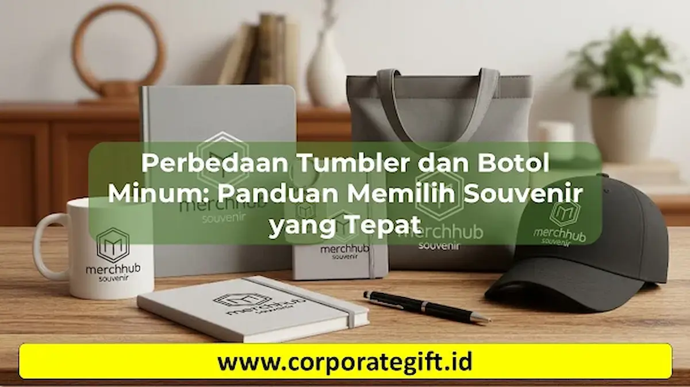

Corporate Gifts ID - Perbedaan utama antara souvenir tumbler dan botol minum biasa terletak pada material, fitur insulasi suhu, dan fleksibilitas kustomisasi. Tumbler umumnya terbuat dari material premium seperti stainless steel yang dilengkapi teknologi kedap udara untuk menjaga suhu minuman panas atau dingin, serta mudah dikustomisasi. Sebaliknya, botol minum biasa umumnya berbahan plastik atau aluminium standar tanpa penahan suhu khusus dan lebih difokuskan pada fungsionalitas dasar.
Memilih souvenir untuk acara penting seperti pernikahan, ulang tahun, atau event perusahaan memerlukan pertimbangan matang. Artikel ini akan menjelaskan perbedaan tumbler dan botol minum, keunggulan masing-masing, serta tips memilih souvenir yang tepat sesuai dengan kebutuhan acara Anda.
Poin Kunci Perbedaan Tumbler dan Botol Minum:
- Insulasi & Material: Tumbler memakai konstruksi double wall stainless steel (SUS304) untuk menjaga suhu panas/dingin berjam-jam, sedangkan botol minum biasa umumnya single layer plastik atau aluminium tanpa retensi suhu.
- Nilai Branding & Kustomisasi: Permukaan tumbler sangat ideal untuk teknik grafir laser presisi dan UV print, memberikan kesan merchandise eksklusif dan tahan lama.
- Relevansi Acara: Pilih tumbler stainless berinsulasi untuk gathering korporat, cinderamata pernikahan, dan gift set VIP, sementara botol minum ringan cocok untuk event massal atau outdoor kasual.
Apa Itu Tumbler dan Botol Minum Biasa
Tumbler adalah wadah minuman yang dapat digunakan berulang kali (reusable), biasanya memiliki lapisan dinding ganda (double wall) untuk insulasi yang berfungsi menjaga suhu minuman tetap stabil dalam waktu lama.
Botol minum biasa umumnya merupakan wadah air sederhana yang terbuat dari plastik, polikarbonat, atau aluminium selapis. Wadah ini tidak memiliki isolasi khusus, berbobot lebih ringan, dan jarang dijadikan media branding premium.
Beberapa ciri utama tumbler meliputi:
- Material premium: Stainless steel berkualitas tinggi (SUS304 food-grade) atau kaca borosilicate.
- Kustomisasi fleksibel: Mudah dicetak dengan logo, nama, atau desain khusus melalui grafir laser atau print UV.
- Retensi suhu: Sangat cocok untuk minuman panas (kopi/teh) maupun minuman dingin ber-es.
Di sisi lain, botol minum biasa memang lebih murah dan ringan, namun kurang memberikan kesan eksklusif dan kurang fungsional jika dibandingkan dengan tumbler vacuum insulated.
Perbedaan Utama Antara Tumbler dan Botol Minum
| Aspek Perbandingan | Souvenir Tumbler | Botol Minum Biasa |
|---|---|---|
| Material Utama | Stainless steel (SUS304), kaca borosilicate double-wall | Plastik PET/PP, aluminium selapis |
| Insulasi Suhu | Mampu menjaga suhu panas/dingin 8-24 jam | Tidak ada atau sangat terbatas |
| Desain & Kustomisasi | Sangat fleksibel (grafir laser, print UV full color) | Ruang cetak terbatas, sablon manual standar |
| Fungsi Utama | Souvenir eksklusif, corporate gift, media branding | Sekadar wadah pembawa air minum harian |
| Daya Tahan Fisik | Sangat awet, tahan benturan dan suhu ekstrem | Lebih mudah tergores, rentan retak atau penyok |
Pemahaman mengenai tabel perbedaan di atas sangat krusial agar alokasi anggaran souvenir kantor Anda tepat sasaran dan sesuai dengan impresi yang ingin dibangun.

Kustomisasi tumbler stainless steel dengan grafir laser presisi memberikan kesan profesional bagi relasi bisnis.
Keunggulan Tumbler Sebagai Souvenir
Sebagai merchandise, tumbler menawarkan dominasi keunggulan dibandingkan botol minum biasa atau souvenir konvensional lainnya:
- Fungsional dan Praktis: Tumbler relevan digunakan sehari-hari oleh berbagai kalangan, dari pekerja kantoran hingga pelajar, membuat souvenir Anda tidak terbuang sia-sia.
- Awet dan Tahan Lama: Material premium memastikan tumbler memiliki siklus hidup yang panjang, sehingga memperpanjang paparan merek (brand exposure) Anda.
- Personalisasi Fleksibel: Logo perusahaan, inisial pasangan pengantin, atau pesan kampanye khusus dapat diaplikasikan secara presisi dan elegan.
- Branding Efektif: Membangun persepsi positif yang kuat. Sangat ideal untuk corporate gift, event promosi B2B, atau merchandise VIP.
- Ramah Lingkungan (Eco-Friendly): Mendorong gaya hidup berkelanjutan dengan mengurangi limbah botol plastik sekali pakai.
Tips Memilih Souvenir Berdasarkan Kebutuhan Acara
Berikut adalah panduan praktis memilih souvenir agar relevan dengan karakteristik acara Anda:
- Pernikahan (Wedding): Pilih tumbler kaca atau stainless steel dengan palet warna elegan (pastel atau monokrom) dan tambahkan desain inisial yang minimalis.
- Event Perusahaan (Corporate Gathering): Gunakan tumbler vakum berbahan matte atau metalik yang dilengkapi cetak logo perusahaan tajam dan kemasan kotak (packaging) eksklusif.
- Acara Anak atau Keluarga: Keamanan adalah prioritas. Pastikan material bersertifikasi food grade, bebas BPA (BPA-free), anti-tumpah, dan dimensinya pas untuk genggaman anak-anak.
- Budget Terbatas: Pilih tumbler berbahan plastik tebal lapis ganda atau stainless steel model dasar. Tetap berkesan premium jika desain cetakannya dirancang dengan baik.
- Peserta Skala Besar: Pastikan ketersediaan stok vendor dan kalkulasi waktu produksi (lead time) agar distribusi souvenir di hari-H berjalan lancar.